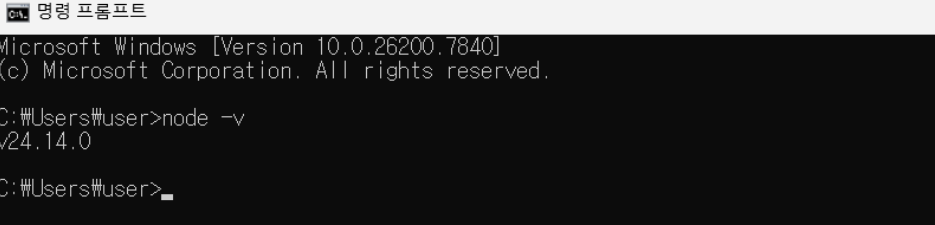
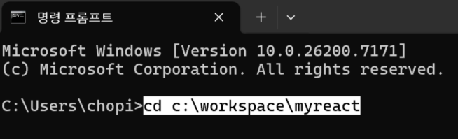
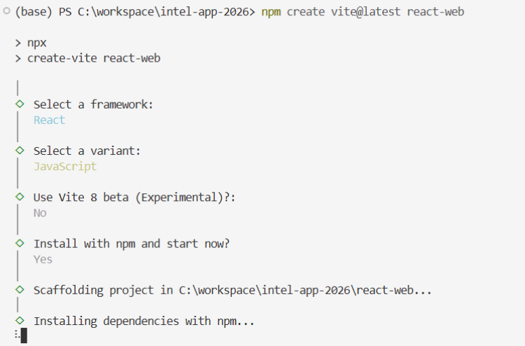
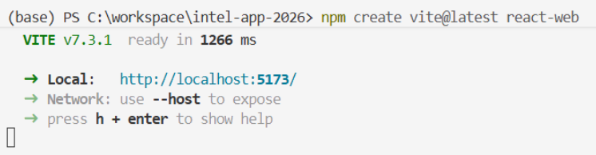
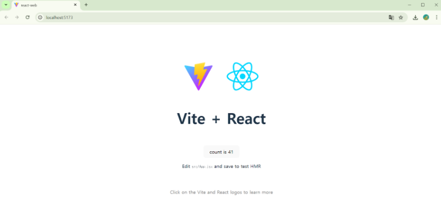

01
Vite의 정의와 특징
Vite는 기본 설정이 적용된 React 애플리케이션을 설치하는 도구입니다. 빌드 도구 및 개발 서버가 내장되어 있어 기존 방식보다 빠른 개발 환경을 제공합니다.
- 프레임워크 지원: React, Vue, Svelte 등 다양한 프레임워크를 지원합니다.
- 필요 환경: Node.js 설치가 필수적입니다. (LTS 버전인 20 이상의 짝수 버전 권장)
-
버전 확인: 터미널에서
node -v명령어를 통해 설치된 버전을 확인해야 합니다.

02
설치 및 실행 순서
a. 작업 디렉토리 이동

명령 프롬프트(CMD) 혹은 터미널에서 프로젝트를 생성할 대상 폴더로 이동합니다.
b. 프로젝트 생성
다음 명령어를 입력하여 프로젝트 생성을 시작합니다.
npm create vite@latest [프로젝트명]
명령어 실행 후 나타나는 선택지에서 다음과 같이 설정합니다.

- 진행 여부(y/n):
y선택 - Framework:
React선택 -
Variant:
JavaScript선택 (필요에 따라 추가 옵션 No/Yes 선택)
c. 에디터 활용 및 라이브러리 설치
프로젝트 생성이 완료되면 VS Code에서 해당 폴더를 실행합니다. 이후 터미널에서 아래 명령어를 입력하여 필요한 패키지를 설치합니다.
npm install
d. 개발 서버 실행 및 접속
설치가 완료된 후 개발 서버를 구동하여 브라우저에서 확인합니다.

-
개발 서버 실행:
npm run dev명령어를 입력합니다. -
개발 서버 접속: 브라우저 주소창에
http://localhost:5173을 입력합니다. (Vite 기반 React 프로젝트는 기본적으로 5173번 포트를 사용합니다.) -
개발 서버 종료: 터미널에서
Ctrl + C를 입력하여 종료합니다.

Comments